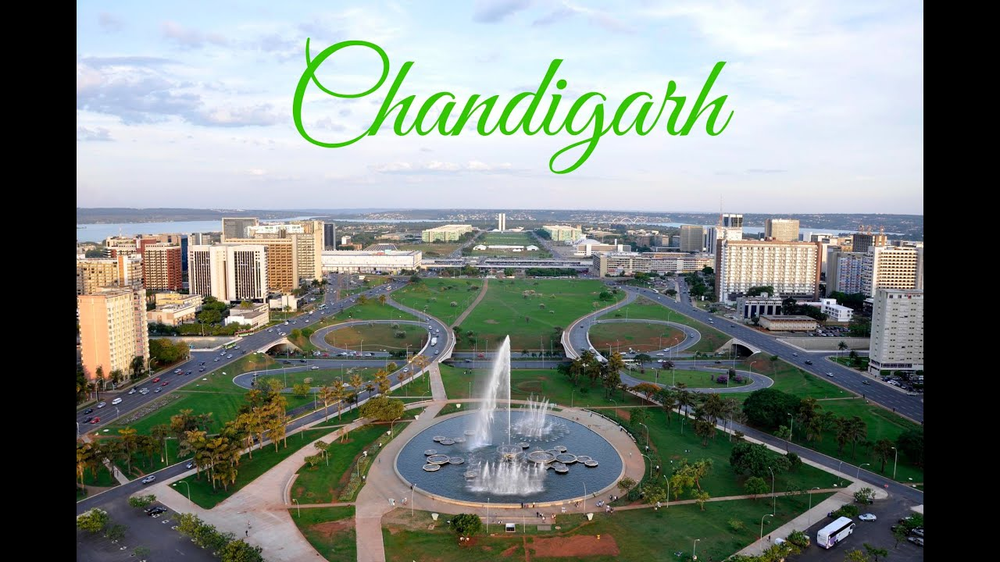
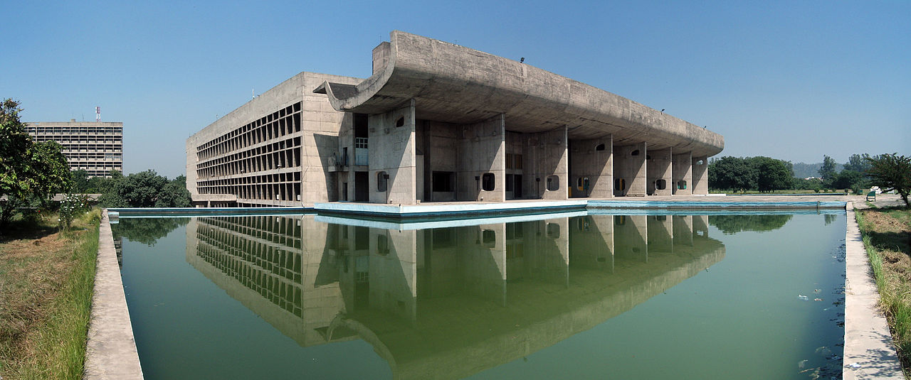
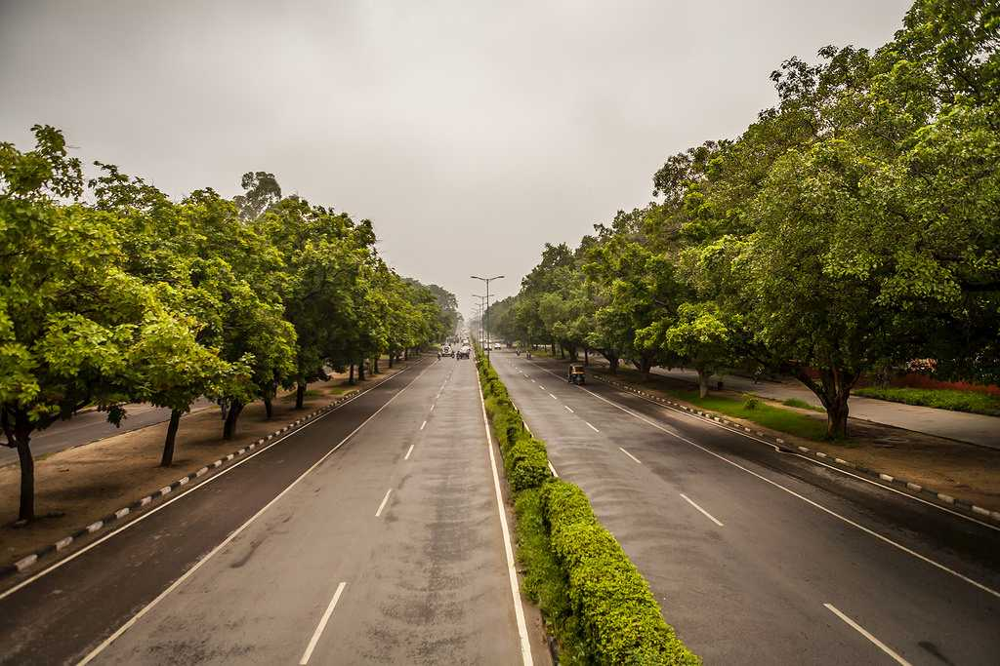
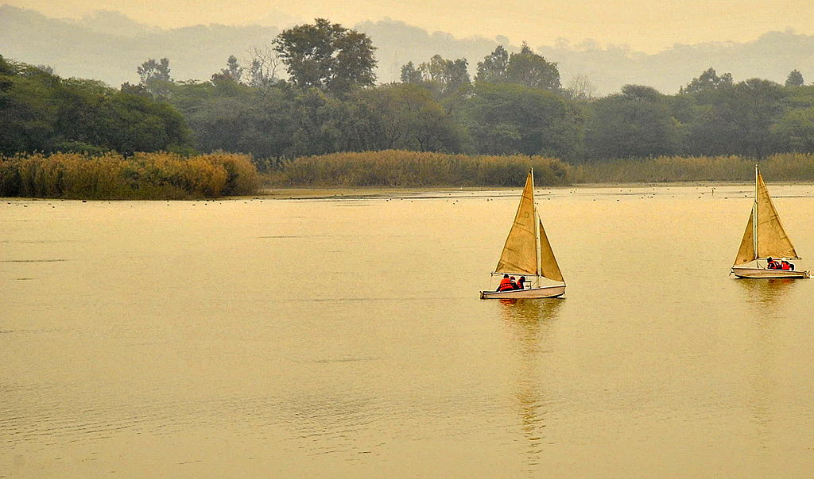

Chandigarh
Chandigarh (local pronunciation: is a city and a union territory in India that serves as the capital of the two neighbouring states of Haryana and Punjab. The city is unique as it is not a part of either of the two states but is governed directly by the Union Government, which administers all such territories in the country.
Chandigarh is bordered by the state of Punjab to the north, the west and the south, and to the state of Haryana to the east. It is considered to be a part of the Chandigarh capital region or Greater Chandigarh, which includes Chandigarh, and the city of Panchkula (in Haryana) and cities of Kharar, Kurali, Mohali, Zirakpur (in Punjab). It is located 260 km (162 miles) north of New Delhi, 229 km (143 miles) southeast of Amritsar.

History
Chandigarh was the dream city of India's first Prime Minister, Jawaharlal Nehru. After the partition of India in 1947, the former British province of Punjab was split between (mostly Sikhs) East Punjab in India and (mostly Muslim) West Punjab in Pakistan.[22] The Indian Punjab required a new capital city to replace Lahore, which had become part of Pakistan during the partition.[23][24] Therefore, an American planner and architect Albert Mayer was tasked to design a new city called "Chandigarh" in 1949. The government carved out Chandigarh of nearly 50 Puadhi speaking villages of the then state of East Punjab, India.[25] Shimla was the temporary capital of East Punjab until Chandigarh was completed in 1960.
As of 2016, many historical villages in Chandigarh are still inhabited within the modern blocks of sectors including Burail and Attawa, while there are a number of non-sectoral villages that lie on the outskirts of the city. These villages were a part of the pre-Chandigarh era
.

Geography
Chandigarh is located near the foothills of the Sivalik range of the Himalayas in northwest India. It covers an area of approximately 114 km2.[24] It borders the states of Haryana and Punjab. The exact cartographic co-ordinates of Chandigarh are 30.74°N 76.79°E.[31] It has an average elevation of 321 metres (1053 ft).
The city, lying in the northern plains, includes a vast area of flat, fertile land. Its northeast covers sections of Bhabar and while the remainder of its terrain is part of the Terai.[32] The surrounding cities are Mohali, Patiala, Zirakpur and Roopnagar in Punjab, and Panchkula and Ambala in Haryana.
Chandigarh is situated 44 km (28 miles) northeast of Ambala, 229 km (143 miles) southeast of Amritsar and 250 km (156 miles) north of Delhi

Tourism
Chandigarh is the best-planned city in India, with architecture which is world-renowned, and a quality of life, which is unparalleled. As the capital of the states of Punjab and Haryana, and the Union Territory of Chandigarh it is a prestigious city. The face of modern India, Chandigarh, is the manifestation of a dream that Pt. Jawahar Lal Nehru envisaged and Le Corbusier executed.
Serenity and a city are two diametrically opposite concepts, which however, get belied in the 'City Beautiful'. Chandigarh is a rare epitome of modernization co-existing with nature's preservation. It is here that the trees and plants are as much a part of the construction plans as the buildings and the roads. India’s first planned city, is a rich, prosperous, spic and span, green city rightly called “ THE CITY BEAUTIFUL ”.

Administration
From 1952 to 1966 (the year Haryana was carved out of Punjab) Chandigarh was the capital of Punjab. Citizens of the city were represented in the state's Legislative Assembly and a Chief Commissioner headed the local administration. While Punjab had remained undivided, Chandigarh, like other large cities of India, fitted into the larger framework of the state administration. When Punjab was divided, both Punjab and Haryana claimed the new city for its capital. Pending resolution of the issue, the Central Government made Chandigarh a Union Territory (under Section 4 of the Punjab Re-Organisation Act, 1966, with effect from November 1, 1966) with its administration functioning directly under the Central Government. Under the provisions of this Act, the laws in force in the erstwhile State of Punjab prior to November 1,1966, continue to be applicable to the Union Territory of Chandigarh.
The practice of appointing an Administrator of the UT designated as "Chief Commissioner" continued up to May 31, 1984. There after, on June 1, 1984, the Governor of Punjab took over the direct administration of the Union Territory as the Administrator. "Chief Commissioner" was redesignated as "Adviser to the Administrator". Ever since June 1984, the Governor of Punjab has been functioning as the Administrator of Union Territory of Chandigarh.

Home Page